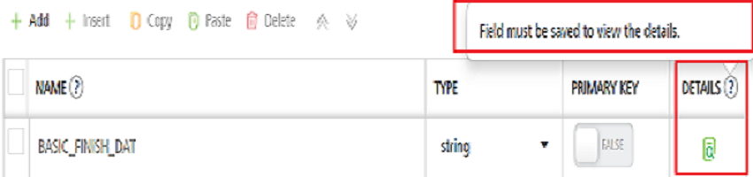

Overview
User Guide: Object Services > Generating Objects' Definition from Meta Data of Back-end Provider
Configuring a Data Model
You can design and optimize a data model based on the use cases of your mobile application. You can do this independent of the back-end system. Various data model entities, such as “Customer” and “Account” are grouped into reusable sets, such as “CRM” or “Work Order”. These sets encapsulate the related and dependent data model entities.
After you select an endpoint type, you can generate a data model from back-end LOB systems that already have their data model exposed as objects. Or, you can build a data model and map the objects to a back-end system manually. You can also create a service-driven object from an existing Service.
The following sections detail about Generating object's definition and object relationships:
- Generating Objects' Definition from Meta Data of Back-end Provider
- Creating Objects' Definition and Map to Back-end Objects Manually
- Configuring Relationships between Objects
Generating Objects' Definition from Meta Data of Back-end Provider
You can generate a data model from a backend LOB system that has its data model exposed as objects. The example in the following section details the steps for generating a data model from a sample SAP backend.
 Steps to generate a data model from back-end LOB objects
Steps to generate a data model from back-end LOB objects
To generate a data model from back-end LOB objects, follow these steps:
-
You have Selected an Endpoint Type for your Object Service. Follow these steps to continue work with Objects Definition.
The data model configure screen for the object service appears.

-
Click Generate.
- From the Import Objects from Backend screen, click the EmpDirDetails schema to expand the tables details.
- Under Tables, select the check boxes for the individual tables.

- Click NEXT.
The Import Objects from Backend screen shows the imported back-end objects and the names of the imported objects for the data model. You can edit the names of the objects for the data model.
- Click GENERATE.

- In the Data Model tab of the navigation pane, click the plus button next to the contact object.
Fields and Relationships appear under the contact object.
- Click Fields.
The list of fields in the contact object appears in the Configure screen. You can change the name of the fields or modify the attributes. For example, you can change the primary key attribute. You cannot change the auto-generated attribute.

Note: For metadata and Data Pre and Post Processors, refer to Automatic Field Level Encryption for Object Services.
- In the Data Model tab of the navigation pane, under the contact object, click Relationships.
The list of relationships for the contact object appears. The contact object has a many-to-one relationship with the VTI_SAMPLE_COMPANY object and a one-to-many relationship with the VTI_SAMPLE_ORDER_ITEM object. You can edit or delete the relationships, or add new relationships.

- In the navigation pane, click the Mapping tab.
The Common Mapping configuration screen for the VTI_SAMPLE_ORDER object appears. The common mapping between a data model field and a back-end object field is applied to a transform request, response, or both, when methods are invoked on a back-end object. The double-headed arrow icon in the Type drop-down indicates that the mapping transformation is applied to both request and response. The right-arrow icon indicates only request mapping, and the left-arrow icon indicates only response mapping of the object.
- Click Save.
You can now publish the Volt MX Foundry application as it is, or you can also configure the objects to be enabled for offline synchronization.
For more details on how to enable synchronization for the application, click Sync scope mapped to an object service.
After you have generated the data model from the back-end objects that you imported, you can publish your app. You can then provide the code that Volt MX Foundry generates to a mobile application developer. The mobile application developer integrates the code with platform SDKs and adds additional logic and modifies the presentation layer. The mobile application developer builds the client binary and publishes it to the enterprise app store.
Note: To lock fields (read-only fields) in a data model of Object Services, refer to Configuring Read-only Fields for Object Services through MFCLI
At run time, Volt MX Foundry is the middleware that talks to the back end, manages the integration, and filters, transforms, and synchronizes the data it sends to the front-end clients.
Creating Objects' Definition and Map to Back-end Objects Manually
You can create a new data model manually and map it to your backend system. You must provide this data model to the application developer to integrate it with the app. The end user’s device will use this data model to synchronize data with Volt MX Foundry. Mapping specifies how Volt MX Foundry will populate the data model based on the backend LOB objects. You can build the client application using your preferred data model and then map the application objects with the backend objects.
In this procedure, you will create a new data model: EmployeeModelSchema, add objects to the data model, and then add fields to the objects.
Steps to create a Data Model and add an object and fields
-
Steps to create an object:
- Create a new object service. See Create an Object Service.
-
Click Save & Configure.
The Configure screen for the new object service appears. The Data Model and Mapping tabs appear. The Data Model tab is selected by default.
-
Click CONFIGURE NEW.
-
In the Name text box, enter department, and then click SAVE.
In the Configure screen, the department object is created and appears in the list of objects.
-
Steps to create fields:
-
In the Data Model tab of the navigation pane, click the plus button next to the department object.
Fields and Relationships appear under the department object.
-
Click Fields.
The metadata details of the field is created by default and appears the same in the Field Configure screen.
-
Click the Add button.
A row is created for the new field including the basic columns NAME, TYPE, PRIMARY KEY, and DETAILS.
-
Under the NAME column, type the required name of the field, for example Department_id.

-
Under the TYPE column, select the data type of the field. The string data type is selected by default.
The available data types as follows:Basic data types: stringdatebooleannumberAdvanced data types binary: Used for uploading an image file format as evidence/proof.enum: Click here for more details on How to Configure Enum data type and examples.workflow state: Used for associating a back-end workflow. While defining aworkflow statedata type for a field, you can create a workflow or use an existing one. A workflow can contain a set of nodes represents a specific task or an event as per your business logic. Here, the workflow data type is a part of a field in an object. Backend workflow is linked to a verb in an Object Service and whenever that verb in the object service is invoked, the related workflow is triggers automatically. So that the workflow will execute all the subsequent tasks that were defined with in it and completes the entire backend process that is related to the linked verb. Using Workflow, you can visualize and design a backend process. It justifies the low code concept and you can design the backend workflow simply by dragging and dropping different types of nodes and connecting them as per the logic you need. For more information on how to configure a workflow, refer to Workflow -
If you want to set the field as a primary key, under the PRIMARY KEY column, click the toggle button to set to TRUE. The primary key value is FALSE by default.
-
If you want to view and configure the additional columns of the field, click the View Details button under the DETAILS column.
Important: The View Details button is active only after you save the field details.

The field details page displays the additional columns including unique, nullable, _max length, autogenerated, creatable, updatable, precision, description_, and metadata.
The following details to help you when to use some of the specific constraints to specify rules for a field: Field constraints Description --- --- 
Unique: The uniqueconstraint ensures that all values in a column are different.Both theuniqueandprimary keyconstraints provide a guarantee for uniqueness for a column or set of columns.Aprimary keyconstraint automatically has auniqueconstraint.However, you can have manyuniqueconstraints per table, but only oneprimary keyconstraint per table.^^ Primary key The primary keyconstraint uniquely identifies each record in a table.Primary keysmust containuniquevalues, and cannot contain NULL values.A table can have only ONEprimary key; and in the table, this primary key can consist of single or multiple columns (fields).^^ Precision is the number of digits in a number. For example, the number 123 has a precision of 3.For example, the number 123.45 has a precision of 5 and a scale of 2. Scale is the number of digits to the right of the decimal point in a number. ^^ Metadata: This metadata of the Object allows app developers to control client-side logic by using the Data Pre and Post Processors for Models functionality, which helps to access the metadata dynamically at runtime and has custom JS code written to transform the data based on the metadata. This allows app developers to modify business logic at the client app and control which fields get transformed and how.For example, you can write your custom logic for fields in models to transform data in client before sending to back end and vice versa such as data encryption, decryption, currency or temperature conversion, prepend or append characters such as salutations (Mr. or Dr.) or currency symbol ($ or €) and so on. For more information on metadata, Click here for more information on Object Metadata for Controlling Client-side Logic. -
If you want to add more fields to the object, repeat step 2 in the procedure.
-
Click SAVE to save the details of the field.
Note: If you want to create more objects in the data model, select the Data Model root node and click Add. And then repeat steps 1 and 2.
Note: To lock fields (read-only fields) in a data model of Object Services, refer to Configuring Read-only Fields for Object Services through MFCLI
Note: You can view the service in the Data Panel feature of Volt MX Iris. By using the Data Panel, you can link back-end data services to your application UI elements seamlessly with low-code to no code. For more information on Data Panel, click here.
-
Note: You can also clone a data model of an existing object service. Refer to Actions in objects services.
Configuring Relationships between Objects
The following procedure helps you how to define relationships between the unique fields in objects in the EmpolyeeModelSchema data model.
Click here for more details..
**To configure the relationships, follow these steps:** 1. In the **Data Model** tab of the navigation pane, under the **department** object, click **Relationships**. The Relationships screen appears. 3. Click the **Add** button. The screen for configuring the relationships appears. 5. Click in the **Select Target Objects** field, and then select the **employee** object from the drop-down menu. 6. Click in the **Select Relationship Type** field, and select **One to Many** from the drop-down menu. 7. Under **Specify Object Attribute Relationships**, click in the **Source Object Attributes** field, and then select **Department\_id** from the drop-down menu. 8. Click in the **Target Object Attributes** field, and then select **Department\_id** from the drop-down menu.  9. Click **SAVE**. > **_Note:_** You can add objects to the data model, configure relationships, and enable synchronization for the application. > **_Note:_** You can sort fields by clicking the column name header in the data model.You can now configure Common Mapping and Methods to the Fields on the Back-End, refer to Mapping Operations to Back-end Methods.